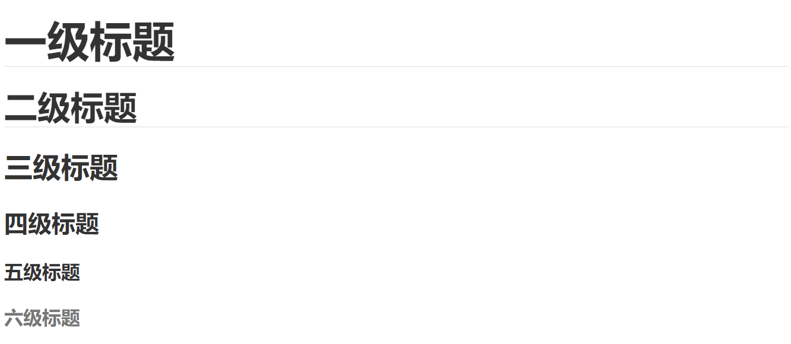
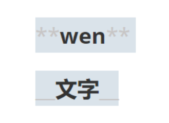
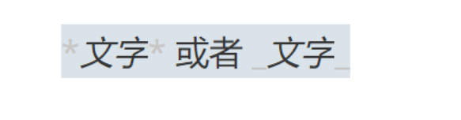

Typora-使用技巧 Littleblue 2023-02-13 Typora Typora 1.标题123一级======从大变小======>六级格式：# + "空格" + 标题 （几个#代表几级标题）快捷键：Ctrl+数字  2.文字2.1 加粗12语法：**文字** 或者 __文字__快捷键：Ctrl+b  2.2 斜体12语法：*文字* 或者 _文字_快捷键：Ctrl+i  2.3 斜体 + 加粗1语法：***文字*** 或者 ___文字___